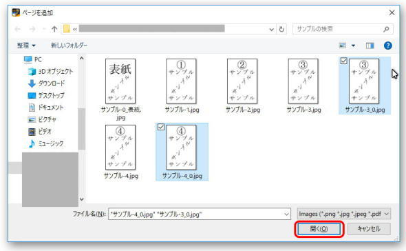

| Kindle Comic Creator キンドルコミッククリエーター 写真集 コミック 漫画 マンガ KDP 自費出版 ～電子書籍出版～: 図解本 自費出版 キンドルコミッククリエーター 電子書籍出版 手順解説！ セルフ出版 電子出版＆公開で キンドル作家 写真家・漫画家デビュー！ KDP入門書 初めてのアマゾンキンドル解説 | |
| 林克弘 | |
| (2018) | |
・この電子書籍は一太郎2018を使用し 横書き(リフロー形式)にて作成させて頂きました。
・当文書内にある記載情報は、2018年8月現在のものであり、今後 変わる可能性がありますので ご理解のほど お願いいたします。
下記ページよりKindle Comic Creatorをダウンロードします。
https://www.amazon.co.jp/gp/feature.html?ie=UTF8&docId=3077699036
下図① [今すぐダウンロード] をクリックします。
1). 下図② □利用条件に同意します にチェック
2). Windows(7以降)、Mac(OSX 10.9以降) いずれかの [今すぐダウンロード]をクリックし KindleComicCreatorInstall.exe をダウンロードします。
1). 下図② より上にある □利用条件に同意します にチェック
2). Windows(7以降)、Mac(OSX 10.9以降) いずれかの [今すぐダウンロード]をクリックし KindleComicCreatorInstall.exe をダウンロードします。
ダウンロードした「KindleComicCreatorInstall.exe」を開きます。
下図 表示されましたら、
[Japanese/Nihongo] を選択し [OK] をクリックします。
0-4. [ライセンス契約書]
下図 表示されましたら
[同意する] をクリックします。
下図 インストールするコンポーネントの内容を確認のうえ
[次へ] をクリックします。
インストール先フォルダを確認のうえ(通常はデフォルト指定のまま)
[インストール] をクリックします。
下図 「Kindle Comic Creatorセットアップウィザードは完了しました」が表示されましたら、[完了]をクリックします。
Kindle Comic Creator を開きます。
Kindle Comic Creatorを開き、
下図、[新しい本を作成] をクリックします。
下図項目について 適宜に選択し [続ける] をクリックします。
・本の言語を選んでください。：
Kindle パネルビューを作成しますか？：
・本の縦方向(縦組/横組)：
・本のページ進行方向(右開き/左開き)？：
・本のページサイズ(画像の解像度)？：
作成した画像サイズが W 800px H 1280px でなくとも
上記 デフォルト画面のまま [続ける] で 問題ない場合がほとんどだと思われます。
各項目詳細については次ページ記載内容をご覧ください。
・画像 長辺：2,560 ピクセル(px、pixcel) 以上
・画像 短辺：1,600 ピクセル(px、pixcel) 以上
・画像 縦横比： 1：1.6 (推奨)
・解像度： 300 ppi (72dpi以上推奨)
・画像ファイル形式： JPEG (JPEG/JPG)、TIFF (TIF/TIFF)
・画像ファイルサイズ： 50MB 以下(圧縮非推奨、)
・表紙画像ファイル カラープロファイル： RGB(CMYK、sRGB非推奨)
作成した任意の表紙画像ファイルをブラウザ(Internet Explorer/Firefox/Safari)で開き、問題なく表示されれば 通常はKDPサービスへ画像をアップロードしても支障はない。
表紙データについては 下記『Kindle パブリッシング・ガイドライン』内、
[セクション 4 表紙画像のガイドライン] に詳しい解説が記載されています。
https://kindlegen.s3.amazonaws.com/AmazonKindlePublishingGuidelines_JP.pdf
表紙画像については下記ページ内にも説明があります。
電子書籍の表紙の作成
https://kdp.amazon.co.jp/ja_JP/help/topic/G200645690
・言語「日本語」選択にて 『非推奨』となる設定項目です
・詳細については、Kindle Comic Creator ヘルプ[上記キャプチャ画面 ？]から
「AmazonKindlePublishingGuidelines.pdf」(英語版PDF)のリンクが現れますので、
上記文書内 「11 Creating Fixed-Layout Books with Image Pop-Ups or Virtual Panels」
に詳しく記載があります。
・上記PDF 日本語版「AmazonKindlePublishingGuidelines_JP.pdf」も公開されており
「11.3 パネル ビュー (領域拡大)」に 日本語にて詳細が記載されています。
日本語版「AmazonKindlePublishingGuidelines_JP.pdf」
https://kindlegen.s3.amazonaws.com/AmazonKindlePublishingGuidelines_JP.pdf
縦置き：スマホの向きが縦固定となる
(スマホを横に向きを変えても画面は縦のまま)
横置き：スマホの向きが横固定となる
(スマホを横に向きを変えても画面は横のまま)
アンロック：スマホの向きに応じて 画面表示が自動的に切り替わる
(縦の時：画面は1ページ表示、横の時：画面は2ページ表示)
下図項目について 適宜に入力・参照指定のうえ [ページの追加を開始] をクリックします。
メタデータおよびカバー画像
・タイトル
・著者
・出版社
・カバー画像
新しい本をどこに保存しますか？
・位置
・用意した任意の表紙画像を[ブラウズ]ボタンクリックにて選択参照させます。
・KDP管理画面上からのアップロード作業の際も下図のように表紙画像のアップロードを求められます。
ここで もしかしたら 表紙画像が2枚重複になるのではないか？と思ってしまいますが、
KDP管理画面上でも、表紙画像を通常どおり アップロードして頂いて問題ありません。
(KDP管理画面 Kindle 本の表紙 画面の例)
また それでももし不安な場合は KDP管理画面内、下図 [プレビューアーを起動]にて公開される電子書籍のページ内容を確認することができます。
・必ず空の任意のフォルダ を本の保存先として指定する必要があります。
手順完了後に、保存先フォルダには以下のようなファイル フォルダが生成されます
toc.ncx
content.opf
cover-image.jpg
fonts [フォルダ]
misc [フォルダ] ---- ke_book.log
html [フォルダ] ---- Page-0.html
scaled-images [フォルダ] ---- (複数の)jpgデータ
手順3. の後に以下のような画面が表示されます。
電子書籍公開用に作成した画像データを選択し [開く]ボタンをクリックします
(ファイル複数選択可能です)
キーボード「Ctrl」キー：飛び石選択(離れているファイルをそれぞれ選択)可能
キーボード「Shift」キー：連続選択する場合に使用
画像ファイル名は連番にて設定します
(仮に下図 4ファイルにて 意図的に[Ctrl]キーで 順番を変えて選択のうえ [開く]をクリックしても、次のKindle Comic Creator画面では ページは連番での順番そのままとなります)
(ページインポート成功後の画像並び順変更手順については 【＋ページを追加】を参照願います)
手順4. 実施後 問題がなければ、下図「ページのインポートに成功しました！」画面が表示されます。
[OK]をクリックします。
ここでは、作成した電子書籍をKDP管理画面上にアップロードする為の変換ファイル(mobi形式)作成手順について説明させて頂きます。
下図のようにKindle Comic Creator 画面 メニューバー内
「ファイル」→「KF8ブックとしてエクスポート」を選択します。
続いて 下図のような画面が表示されます。
ここでは、作成されるmobi形式ファイルの保存場所を指定し [保存]ボタンをクリックします。
ファイル名指定時、ファイル拡張子も一緒に記載します。
もし ファイル名のみ指定した場合、指定した保存先には ファイル拡張子 ＊.mobi） と
mobi のとなりに 『）』もついたファイル名が作成されてしまいます。
手順2-1. の後、以下のような画面が表示されます。
この作業は、生成する電子書籍のページ数が多い場合
数分程 時間がかかります。
下記メッセージが表示されている間は何もせず 待ちましょう。
2-3. mobiファイルが正常に構築されました
2-2. 手順の後、問題がなければ Kindle Comic Creator コンソール画面内に、
下図のように「mobiファイルが正常に構築されました」と表示され、
指定したmobiファイル保存先にKDP公開可能なmobiファイルが生成されます。
手順2-1. にて mobiファイルが正常に生成されると、先ほどまで表示されていなかった
Kindle Comic Creator コンソール画面が下図のように表示されます。
Kindle Comic Creator コンソール画面の 表示←→非表示 の切り替え手順は
下図のようにKindle Comic Creator 画面 メニューバー内
「表示」→「コンソール」を選択／非選択(レ) します。
下図のように、Kindle Comic Creator ブックマネージャー内の
[＋ページを追加]ボタンをクリックします。
3-1. 手順以外のページ追加手順は下図のとおりとなります。
① [＋ページを追加]ボタン横 「▼」をクリック
② プルダウン表示された項目内 「ページを追加」をクリックします
3-1. 3-2. 手順後に下図のような画面が表示されます。
手順『1-4. ページを追加』 と同様に 任意の追加したい画像ファイルを指定し、[開く]をクリックします。

上記3-1. からの手順にて、下図のように 追加されるページは
あらかじめ選択されていたページの下に配置されます。
ブックマネージャー内の任意のサムネイル画像を
並び替えたい場所までドラッグすると
画像の並び順が変更されます。
Kindle Comic Creatorにてデータ作成手順以外で
必要となる上記等の項目については
拙著『一太郎2018 キンドル本 自費出版 ～ KDP 電子書籍出版 ～ 簡単 Part1』
『一太郎2018 KDP 電子書籍出版 ～キンドル本 自己出版～ これであなたもKindle本 作家デビュー！ Part2』
『キンドル本で稼ぐ！副収入 KDP電子出版入門 アマゾン自己出版 初心者でもカンタン！ Part1』
『キンドル本で稼ぐ！副収入 KDP電子出版入門 どれだけ売れたか 読まれたか 売上 全公開 Part2』
にて説明させて頂いておりますので もしよろしければ、ご覧になってください。
ここまでお読み頂き ありがとうございました。
2018年8月26日 初版発行
一太郎2018 キンドル本 自費出版 ～ KDP 電子書籍出版 ～ 簡単 Part1
一太郎2018 KDP 電子書籍出版 ～キンドル本 自己出版～ これであなたもKindle本 作家デビュー！ Part2
キンドル本で稼ぐ！副収入 KDP電子出版入門 アマゾン自己出版 初心者でもカンタン！ Part1
キンドル本で稼ぐ！副収入 KDP電子出版入門 どれだけ売れたか 読まれたか 売上 全公開 Part2
Kindle Comic Creator キンドルコミッククリエーター 写真集 コミック 漫画 マンガ KDP 自費出版 ～電子書籍出版～
著者： 林克弘
注意：
・本書の全部または一部(文章･画像)の無断複写・複製・改変・配布・公衆送信、ならびにホームページや各種SNS上への転載を禁じます